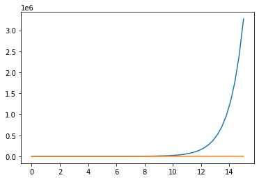
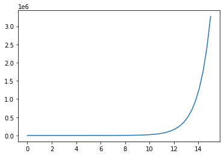

# Import necessary packages
from IPython.display import HTML, Image
# we are importing numpy and giving it the shortcut 'np'
import numpy as np
# import plotting packages
import matplotlib.pyplot as plt
#import plotly.graph_objects as go17 MATH 232 - Math Models w/ Tech

Python Intro & ODEs Review Instructor: Prof. Mario Bañuelos
17.1 Outline
# create some comments!This is my favorite mathematical expression, x^2
y = f(x)
Put some notes here for yourself.
18 Python & Plotting
To begin plotting, we need something to plot.
#help(np.linspace)np.linspace(0,15)array([ 0. , 0.30612245, 0.6122449 , 0.91836735, 1.2244898 ,
1.53061224, 1.83673469, 2.14285714, 2.44897959, 2.75510204,
3.06122449, 3.36734694, 3.67346939, 3.97959184, 4.28571429,
4.59183673, 4.89795918, 5.20408163, 5.51020408, 5.81632653,
6.12244898, 6.42857143, 6.73469388, 7.04081633, 7.34693878,
7.65306122, 7.95918367, 8.26530612, 8.57142857, 8.87755102,
9.18367347, 9.48979592, 9.79591837, 10.10204082, 10.40816327,
10.71428571, 11.02040816, 11.32653061, 11.63265306, 11.93877551,
12.24489796, 12.55102041, 12.85714286, 13.16326531, 13.46938776,
13.7755102 , 14.08163265, 14.3877551 , 14.69387755, 15. ])# create data to plot (exponential growth)
t = np.linspace(0,15)
r1 = 1
r2 = 0.5
n0 = 1
n_cont1 = np.exp(r1*t) * n0
n_cont2 = np.exp(r2*t) * n0n_cont1array([1.00000000e+00, 1.35814860e+00, 1.84456762e+00, 2.50519693e+00,
3.40242971e+00, 4.62100514e+00, 6.27601167e+00, 8.52375646e+00,
1.15765279e+01, 1.57226452e+01, 2.13536885e+01, 2.90014822e+01,
3.93883224e+01, 5.34951950e+01, 7.26544242e+01, 9.86755045e+01,
1.34015998e+02, 1.82013641e+02, 2.47201571e+02, 3.35736468e+02,
4.55980014e+02, 6.19288618e+02, 8.41085969e+02, 1.14231973e+03,
1.55143995e+03, 2.10708599e+03, 2.86173589e+03, 3.88666259e+03,
5.27866536e+03, 7.16921197e+03, 9.73685520e+03, 1.32240963e+04,
1.79602878e+04, 2.43927398e+04, 3.31289654e+04, 4.49940579e+04,
6.11086168e+04, 8.29945824e+04, 1.12718976e+05, 1.53089119e+05,
2.07917773e+05, 2.82383233e+05, 3.83518392e+05, 5.20874967e+05,
7.07425608e+05, 9.60789099e+05, 1.30489437e+06, 1.77224046e+06,
2.40696590e+06, 3.26901737e+06])18.1 Matplotlib
matplotlib.pyplot is a collection of command style functions that make matplotlib work like MATLAB.
Each pyplot function makes some change to a figure: e.g., creates a figure, creates a plotting area in a figure, plots some lines in a plotting area, decorates the plot with labels, etc.
To get started, simply use
plt.plot(x, y)# line plot
plt.plot(t, n_cont1, t, n_cont2)
plt.show()
# creating a plt.figure object, adding to it, then saving it
fig_mp = plt.figure()
plt.plot(t, n_cont1)
plt.show()
# saving the figure
fig_mp.savefig("matplotlib_exp_growth.png", bbox_inches='tight')
18.2 Plotly
plotly is an interactive, open-source plotting library that supports over 40 unique chart types covering a wide range of statistical, financial, geographic, scientific, and 3-dimensional use-cases.
When combined with Dash, you can create interactive applications (similar to shiny apps in R)
To get started with a line chart, initiate a figure with
fig = go.Figure()
fig.add_trace(go.Scatter(x=x, y=y))# Install a pip package in the current Jupyter kernel
#import sys
#!{sys.executable} -m pip install plotly==5.10.0# Create traces
fig = go.Figure()
# add line plot for continuous 1 (with r = 1)
fig.add_trace(go.Scatter(x=t, y=n_cont1, name='$r_{cont.}=1$'))
# add line plot for continous 2 (with r = 0.5)
fig.add_trace(go.Scatter(x=t, y=n_cont2, name='$r_{cont.}=0.5$)'))
# updated the y-axis range
fig.update_yaxes(range=[0, 1000])
# Edit the layout (change title, x-axis title, y-axis title)
fig.update_layout(title='Simulated Population Growth',
xaxis_title='Time',
yaxis_title='Population Size')# Create traces
fig = go.Figure()
# add line plot for continuous 1 (with r = 1)
fig.add_trace(go.Scatter(x=t, y=n_cont1, name='$r_{cont.}=1$'))
# add line plot for continous 2 (with r = 0.5)
fig.add_trace(go.Scatter(x=t, y=n_cont2, name='$r_{cont.}=0.5$)'))
# updated the y-axis range
fig.update_yaxes(range=[0, 1000])
# Edit the layout (change title, x-axis title, y-axis title)
fig.update_layout(title='Simulated Population Growth',
xaxis_title='Time',
yaxis_title='Population Size')19 ODE Review
A differential equation is any equation which contains derivatives, either ordinary derivatives or partial derivatives.
19.1 Separable DEs
A separable differential equation is any differential equation that we can write in the following form,
\begin{equation} N\left( y \right)\frac{{dy}}{{dx}} = M\left( x \right). \end{equation}
Feel free to review this topic here
19.1.1 Example
From the Google Form question, \begin{equation} \frac{{dy}}{{dx}} = 6{y^2}x\hspace{0.25in}\,\,\,y\left( 1 \right) = \frac{1}{{25}} \end{equation}
\begin{align*} {y^{ - 2}}dy & = 6x\,dx\\\int{{{y^{ - 2}}dy}} & = \int{{6x\,dx}}\\ - \frac{1}{y} & = 3{x^2} + c \end{align*}
Solve for c using the initial condition and then we arrive at
\begin{align*} - \frac{1}{y} & = 3{x^2} - 28\\ y\left( x \right) & = \frac{1}{{28 - 3{x^2}}}\end{align*}
20 Population Dynamics
We will investigate how a population p(t) changes in time using a variety of models.
20.0.1 Translate the Model
Translate the following population model,
\frac{dp}{dt} = c; \quad p(0) = p_0
- what is it saying?
- what is it not saying?
- what modifications would you introduce and how would you interpret them?
20.0.2 Malthusian Model (exponential growth)
Named for the British economist Thomas R. Malthus (1766–1834), the Malthusian model assumes that both the birth rate of a population and the death rate of a population are proportional to the current size of the population.
Letting r represent the growth parameter, we write,
\frac{dp}{dt} = rp; \quad p(0) = p_0
Discussion Q: What is one drawback of this model?
20.1 Ebola
# import pandas package
import pandas as pd
# url for Ebola cases
url = "https://www.dropbox.com/s/oq6k1aib0602v9b/ebola_previous-case-counts.csv?dl=1"# read in data, specifying date column
df = pd.read_csv(url, parse_dates=['WHO report date'])
df
# sort data frame by date (oldest to most recent)
df.sort_values(by='WHO report date',ascending=True)| WHO report date | Total Cases, Guinea | Total Deaths, Guinea | Total Cases, Liberia | Total Deaths, Liberia | Total Cases, Sierra Leone | Total Deaths, Sierra Leone | Total Cases | Total Deaths | |
|---|---|---|---|---|---|---|---|---|---|
| 264 | 2014-03-25 | 86 | 59 | 0 | 0 | 0 | 0 | 86 | 59 |
| 263 | 2014-03-26 | 86 | 60 | 0 | 0 | 0 | 0 | 86 | 60 |
| 262 | 2014-03-27 | 103 | 66 | 8 | 6 | 6 | 5 | 117 | 77 |
| 261 | 2014-03-31 | 112 | 70 | 8 | 6 | 0 | 0 | 120 | 76 |
| 260 | 2014-04-01 | 122 | 80 | 8 | 2 | 0 | 0 | 130 | 82 |
| ... | ... | ... | ... | ... | ... | ... | ... | ... | ... |
| 4 | 2016-02-17 | 3804 | 2536 | 10675 | 4809 | 14124 | 3956 | 28603 | 11301 |
| 3 | 2016-03-03 | 3804 | 2536 | 10675 | 4809 | 14124 | 3956 | 28603 | 11301 |
| 2 | 2016-03-23 | 3809 | 2540 | 10675 | 4809 | 14124 | 3956 | 28608 | 11305 |
| 1 | 2016-03-30 | 3811 | 2543 | 10675 | 4809 | 14124 | 3956 | 28610 | 11308 |
| 0 | 2016-04-13 | 3814 | 2544 | 10678 | 4810 | 14124 | 3956 | 28616 | 11310 |
265 rows × 9 columns
# we can also select certain columns of a dataframe
df['Total Cases, Liberia']0 10678
1 10675
2 10675
3 10675
4 10675
...
260 8
261 8
262 8
263 0
264 0
Name: Total Cases, Liberia, Length: 265, dtype: int64# Create traces
fig = go.Figure()
fig.add_trace(go.Scatter(x=df['WHO report date'], y=df['Total Cases']))
# Edit the layout
fig.update_layout(title='Ebola - 2014',
xaxis_title='Date',
yaxis_title='Total # of Cases')fig.update_xaxes(
rangeslider_visible=True,
rangeselector=dict(
buttons=list([
dict(count=1, label="1m", step="month", stepmode="backward"),
dict(count=6, label="6m", step="month", stepmode="backward"),
dict(count=1, label="1y", step="year", stepmode="backward"),
dict(step="all")
])
)
)
fig.show()Let’s assume that the cases in West Africa infected with the Ebola virus grow exponentially:
P(t) = p_0 e^{rt},
where t is time in months and P(t) is the number of cases at time t. Let t=0 represent March 2014.
During this time, there were 49 cases of Ebola. After 3 months, there were 528 cases.
Q: * Determine r and p_0 from this information. * Use your exponential growth model to estimate the time it will take for the outbreak to reach 5,000 cases. * How well does your answer match up to the data above? * Plot your model on the same plot as the data. * How do r and p_0 change if t is measured in days, or if we consider only one country at a time?
r = 1/3 * np.log(528/49)
r0.7924253285318783A function to make this easier …
def calc_r(p0, t1, p_t1):
a = 1/t1
b = np.log(p_t1/p0)
return a*br2 = calc_r(p0 = 49, t1 = 3, p_t1=528)
r20.792425328531878320.2 Logistic Growth
Introduced by the Belgian mathematician Pierre Verhulst in about 1838, the logistic model introduces a carrying capacity K, the greatest population an environment can sustain. We have,
\frac{d p}{dt} = rp\left( 1 - \frac{p}{K}\right); \quad p(0) = p_0
Q: What is the general solution for p(t)?
If we think about the sigmoid function \frac{1}{1+e^{-x}}, what differential equation does it solve?
f' = f(1-f)
21 Equilibria / Steady-state
An equilibrium point is some point at which a population does not change anymore: \frac{dp}{dt} = 0. In the case of the logistic equation, we can find all equilibrium points by solving (for p) the algebraic equation,
rp \left( 1 - \frac{p}{K}\right) = 0
Q: Based on your solutions, what conclusions can you draw?